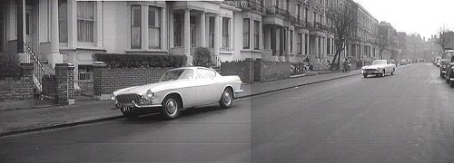
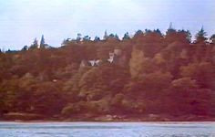
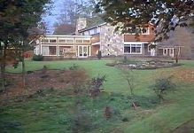

|
|
HELP FIND THE FOLLOWING LOCATIONS
PAGE 35
THE SAINT: The Scorpion (Roy Baker: December 1963)Unknown - 210 Waterloo Lane Putney – Patsy Butler’s flat

THE SAINT: The Death Game (Leslie
Norman:
November 1966)
Unknown 1 - Vogler's
house in Switzerland
is situated across the lake from the Death Game chalets.

Unknown 2 - Vogler's house in Switzerland where Simon Templar is to play The Death Game for real.

Think you know a spot? Need a bigger image? Email me.
< Previous | Index | Avengerland | Next >
Copyright © 2003 Anthony R. McKay